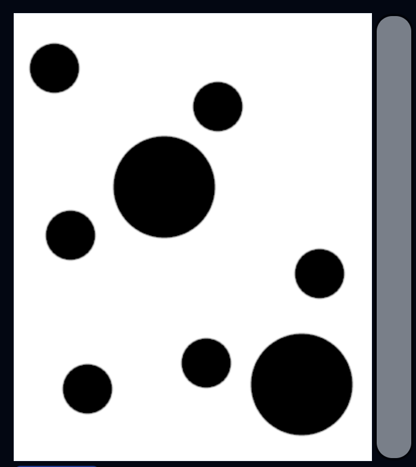

This was our final project for my Data Structures and Algorithms class.
I had a lot of run implementing this in JS.
This uses the dual-gradient energy function (but not squared to make it run faster). It measures the
distinctiveness of a pixel by calculating the rate of change of colors around it.
How it works
First upload an image. Images that have lower resolutions are better. Around 800x800 pixels is a good.
1280x720 might struggle, while 1980x1090 and images taken by smartphones (which can reach up to
3000x2000) are probably too large.
Larger images would should still work, but they will be very slow. I'm currently working on implementing
a faster algorithm.
It should look like this

A grey bar should appear on the right of the image.
Drag the bar inwards to select your desired width. Let go of the bar to start the algorithm. Seam Carver is content aware, so it only removes the parts of the image that are empty.